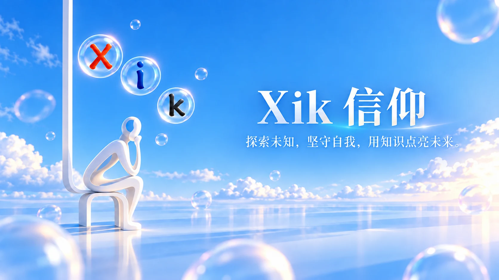

探索未知、勇气、可能
“X”代表尚未被命名的可能。它邀请你离开熟悉的边界，带着开放的心去发问、尝试与冒险。每一次跨出一步，世界都会多一条可走的路。
在未知中寻找答案不是一套约束人的规则，而是一种打开可能的方式。

Xik 的三个字母不是终点，而是三条可以反复走回来的路。它不提供标准答案，而是提醒我们在好奇、笃定与理解之间，慢慢找到自己的方向。

它们彼此关联：探索让视野打开，内在让方向稳定，知识让行动落在真实的世界里。
“X”代表尚未被命名的可能。它邀请你离开熟悉的边界，带着开放的心去发问、尝试与冒险。每一次跨出一步，世界都会多一条可走的路。
在未知中寻找答案“I”是每个人内在的核心。外部世界瞬息万变，真正稳定的力量来自对自我的认识：知道什么值得坚持，也知道为何而出发。
认识自己，是最伟大的探索“K”是坚实的基础。信念不是盲目相信，而是经由学习和理解之后，仍愿意付诸行动的选择。知识让梦想有迹可循，智慧让脚步更加坚定。
让梦想有迹可循不必等待完美的时刻。从今天起，留一点时间给好奇、安静与学习，让改变在微小的行动里积累。
保持对世界的好奇。问题不一定马上有答案，但会为你打开新的方向。
暂停向外追逐，问问自己：今天我感受到了什么？我真正想成为什么样的人？
读一本书、练一项技能、理解一个陌生领域。把知识慢慢变成你自己的力量。